맥주 브랜드 298
세계 각국의 맥주 브랜드와 양조 기업을 모았습니다. 병과 캔, 잔, 탭 핸들처럼 손에 쥐는 물건마다 로고가 붙고 술집 간판에서 멀리서도 알아봐야 해서, 양조장의 문장(紋章)이나 창업 연도를 내세운 전통형 표장과 굵은 글자 로고가 함께 쓰이는 업종입니다. 브랜드 아틀라스에 수록된 맥주 브랜드 298개를 로고와 함께 정리했습니다. 편입 기준은 위키데이터의 분류와 업종 정보, 그리고 편집자가 브랜드 설명을 확인한 경우로 한정했습니다.
다른 컬렉션 보기
컬렉션 전체 →기원 국가가 확인된 브랜드는 242개이며 독일 53개, 벨기에 37개, 미국 21개, 영국 19개, 체코 13개 순으로 많습니다. 산업 분류로는 식음료 293개, 브랜드·비즈니스 4개, 미디어·엔터테인먼트 1개에 걸쳐 있습니다. 설립연도가 확인된 브랜드는 227개이며 가장 오래된 곳은 1803년, 가장 최근은 2013년에 시작했습니다. 시기별로는 1900년 이전 113개, 1900~1949년 41개, 1950~1999년 50개, 2000년 이후 23개입니다. 수록 자료로는 로고 이미지 285개, 로고 변천 자료 1개, 연혁 타임라인 8개를 갖췄습니다. 이 가운데 292개는 공식 웹사이트가 일치하는 위키데이터 개체로 연결해 두었습니다.
국가별 맥주 브랜드
기원 국가가 확인된 브랜드만 나눴습니다.
독일 맥주 브랜드 53
벨기에 맥주 브랜드 37
미국 맥주 브랜드 21
영국 맥주 브랜드 19
체코 맥주 브랜드 13
네덜란드 맥주 브랜드 10
그리스 맥주 브랜드 2
브라질 맥주 브랜드 2
칠레 맥주 브랜드 2
뉴질랜드 맥주 브랜드 1
러시아 맥주 브랜드 1
베트남 맥주 브랜드 1
싱가포르 맥주 브랜드 1
아르헨티나 맥주 브랜드 1
아일랜드 맥주 브랜드 1
인도 맥주 브랜드 1
중국 맥주 브랜드 1
태국 맥주 브랜드 1
필리핀 맥주 브랜드 1
헝가리 맥주 브랜드 1
맥주 브랜드 목록
품질 점수 순 상위는 로고 타일로, 나머지는 가나다순 목록으로 보입니다.
 하이네켄Heineken네덜란드 · 1864년
하이네켄Heineken네덜란드 · 1864년하이네켄(Heineken)은 1864년 네덜란드 암스테르담에서 창립된 하이네켄 N.V.의 플래그십 페일 라거 맥주 브랜드이다.
버드와이저(Budweiser)는 아돌푸스 부시가 1876년 출시한 미국의 아메리칸 라거 맥주 브랜드이다.
코로나 엑스트라(Corona Extra)는 멕시코 그루포 모델로가 양조하는 페일 라거 맥주이다.
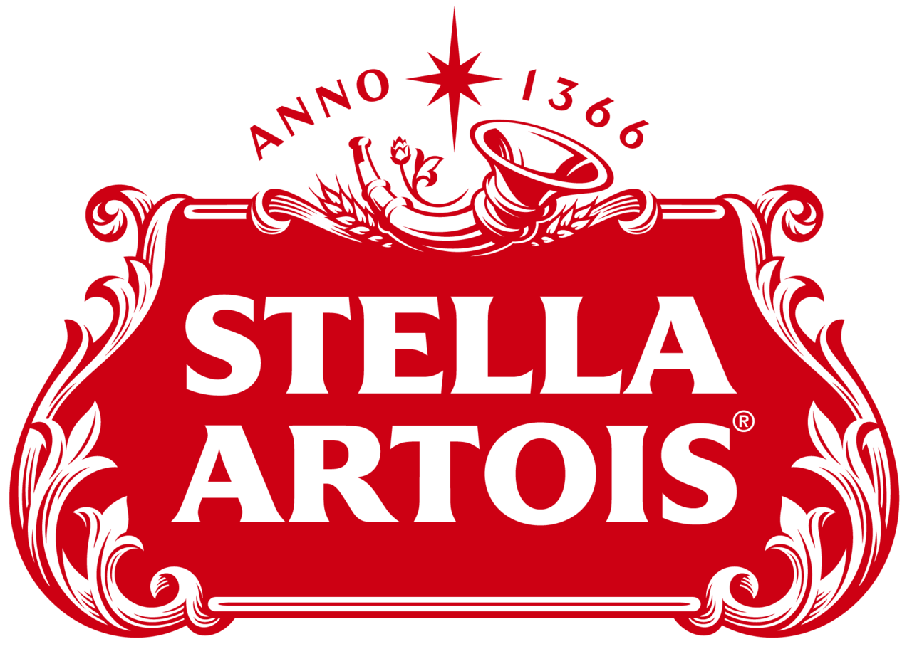
스텔라 아르투아Stella Artois스텔라 아르투아는 벨기에 뢰번(Leuven)에 뿌리를 둔 필스너 라거로, 그 양조 전통은 뢰번의 덴 호른(Den Hoorn) 양조장으로 거슬러…
 기린Kirin일본
기린Kirin일본기린(麒麟, Kirin)은 일본의 대표 맥주·음료 기업으로, 창업기부터 동아시아 신화 속 상서로운 신수 '기린(麒麟)'을 브랜드 심볼로 삼아…
 아사히Asahi일본 · 1986년
아사히Asahi일본 · 1986년아사히(Asahi)는 일본의 대표적 맥주·음료 기업이다.
 포가튼 보드워크 브루잉Forgotten Boardwalk Brewing
포가튼 보드워크 브루잉Forgotten Boardwalk Brewing포가튼 보드워크 브루잉은 2014년 미국 뉴저지 체리힐에서 제이미 켈리가 세운 수제맥주 양조장이다.
 브라흐마Brahma브라질 · 1888년
브라흐마Brahma브라질 · 1888년브라흐마(Brahma)는 브라질에서 1888년에 시작된 맥주 브랜드이다.
 몰슨 쿠어스Molson Coors Brewing Company미국 · 2005년
몰슨 쿠어스Molson Coors Brewing Company미국 · 2005년몰슨 쿠어스(Molson Coors Brewing Company)는 미국과 캐나다에 기반을 둔 다국적 음료·양조 회사로, 맥주 생산량 기준…
 페로니Peroni Brewery이탈리아 · 1846년
페로니Peroni Brewery이탈리아 · 1846년페로니(Peroni Brewery)는 1846년 Francesco Peroni가 이탈리아 Vigevano에서 세운 이탈리아의 맥주 양조…
 링그네스Ringnes노르웨이 · 1876년
링그네스Ringnes노르웨이 · 1876년링그네스(Ringnes)는 노르웨이에서 가장 큰 맥주 양조 회사이다.
 브루클린 브루어리Brooklyn Brewery미국 · 1988년
브루클린 브루어리Brooklyn Brewery미국 · 1988년브루클린 브루어리(Brooklyn Brewery)는 미국 뉴욕 브루클린에 기반을 둔 양조장이다.
 블루문Blue Moon1995년
블루문Blue Moon1995년블루문(Blue Moon)은 Molson Coors가 Blue Moon Brewing Co.라는 이름으로 양조하는 벨기에식…
 필스너 우르켈Pilsner Urquell체코 · 1842년
필스너 우르켈Pilsner Urquell체코 · 1842년필스너 우르켈(Pilsner Urquell)은 체코 플젠에서 양조하는 라거 맥주이다.
 사그르스Central de Cervejas포르투갈 · 1934년
사그르스Central de Cervejas포르투갈 · 1934년사그르스(Central de Cervejas)는 포르투갈의 양조회사로, 1934년에 설립되어 Sagres 맥주 브랜드를 주력으로 생산한다.
 스페이츠Speight's뉴질랜드 · 1876년
스페이츠Speight's뉴질랜드 · 1876년스페이츠(Speight's)는 뉴질랜드 더니딘에 있는 맥주 브랜드이자 양조장이다.
 아사히 맥주Asahi Breweries일본 · 1889년
아사히 맥주Asahi Breweries일본 · 1889년아사히 맥주(Asahi Breweries)는 도쿄 스미다에 본사를 둔 일본의 음료 지주회사 Asahi Group Holdings의 맥주 사업…
크롬바커 바이젠Krombacher Brauerei독일 · 1803년크롬바커 바이젠(Krombacher Brauerei)은 독일 Kreuztal에 본사를 둔 양조회사이다.
 그롤쉬Grolsch네덜란드
그롤쉬Grolsch네덜란드그롤쉬(Grolsch)는 1615년 Willem Neerfeldt가 Groenlo에서 설립한 네덜란드의 맥주 양조회사이다.
 스콜Skol영국 · 1959년
스콜Skol영국 · 1959년스콜(Skol)은 스코틀랜드에서 처음 양조된 국제적인 라거 맥주 브랜드이다.
 부데요비츠키 부드바르Budweiser Budvar체코 · 1895년
부데요비츠키 부드바르Budweiser Budvar체코 · 1895년부데요비츠키 부드바르(Budweiser Budvar)는 체코 체스케부데요비체에 있는 국영 양조장이다.
 에르딩거Erdinger독일 · 1886년
에르딩거Erdinger독일 · 1886년에르딩거(Erdinger)는 독일 에르딩에 본사를 둔 양조장이자 그 맥주 브랜드이다.
 대동강맥주Taedonggang
대동강맥주Taedonggang대동강맥주(Taedonggang)는 조선민주주의인민공화국의 대동강맥주공장에서 생산하는 맥주이다.
 라슈코 양조장Laško Brewery
라슈코 양조장Laško Brewery라슈코 양조장(Laško Brewery)은 슬로베니아 Laško에 있는 맥주 양조장이다.
 몰슨Molson캐나다
몰슨Molson캐나다몰슨(Molson)은 1786년 John Molson이 창업한 캐나다의 맥주 기업으로, 본사는 몬트리올에 있다.
 사뮤엘 아담스Samuel Adams미국 · 1984년
사뮤엘 아담스Samuel Adams미국 · 1984년사뮤엘 아담스(Samuel Adams)는 미국 Boston Beer Company의 대표 맥주 브랜드이다.
 코나 브루잉 컴퍼니Kona Brewing Company미국 · 1994년
코나 브루잉 컴퍼니Kona Brewing Company미국 · 1994년코나 브루잉 컴퍼니(Kona Brewing Company)는 미국 하와이의 Kailua-Kona에 본사를 둔 양조장 겸 펍이다.
 기네스Guinness영국
기네스Guinness영국기네스(Guinness)는 18세기 아일랜드 더블린의 세인트 제임스 게이트 양조장에서 아서 기니스가 시작한 스타우트 맥주 브랜드이다.
 산토리Suntory일본 · 1899년
산토리Suntory일본 · 1899년산토리(Suntory)는 양주, 맥주, 청량 음료를 제조·판매하는 일본 굴지의 기업이다.
 밀러Miller Brewing Company미국 · 1855년
밀러Miller Brewing Company미국 · 1855년밀러(Miller Brewing Company)는 미국 위스콘신주 밀워키에 본사를 둔 맥주 양조회사이다.
 칼스버그Carlsberg Group덴마크 · 1847년
칼스버그Carlsberg Group덴마크 · 1847년칼스버그(Carlsberg Group)는 1847년 J.
 쿠어스 라이트Coors Light1978년
쿠어스 라이트Coors Light1978년쿠어스 라이트(Coors Light)는 Coors가 생산하고 현재 Molson Coors가 판매하는 알코올 도수 4.2%의 미국 라이트 라거…
 암스텔Amstel Brewery네덜란드 · 1870년
암스텔Amstel Brewery네덜란드 · 1870년암스텔(Amstel Brewery)은 1870년 암스테르담에서 설립된 네덜란드의 맥주 양조회사이자 맥주 브랜드이다.
 레프Leffe
레프Leffe레프(Leffe)는 벨기에 나뮤르주 뫼즈강변의 레프 수도원에서 유래한 맥주 브랜드이다.
 발티카Baltika Breweries러시아 · 1990년
발티카Baltika Breweries러시아 · 1990년발티카(Baltika Breweries)는 1990년 러시아 상트페테르부르크에서 생산을 시작한 맥주 제조 회사이다.
 베스트말레 브루어리Westmalle Brewery벨기에 · 1836년
베스트말레 브루어리Westmalle Brewery벨기에 · 1836년베스트말레 브루어리(Westmalle Brewery)는 벨기에 Westmalle Abbey 안에 있는 트라피스트 양조장이다.
 주필러Jupiler벨기에 · 1966년
주필러Jupiler벨기에 · 1966년주필러(Jupiler)는 1966년 출시된 벨기에 맥주이다.
 벨코포포빅키 코젤Velkopopovický Kozel체코 · 1874년
벨코포포빅키 코젤Velkopopovický Kozel체코 · 1874년벨코포포빅키 코젤(Velkopopovický Kozel)은 1874년부터 생산된 체코 맥주이다.
 벡스Beck's독일 · 1873년
벡스Beck's독일 · 1873년벡스(Beck's)는 독일 브레멘에 본사를 둔 맥주 브랜드이다.
 브루독BrewDog영국 · 2007년
브루독BrewDog영국 · 2007년브루독(BrewDog)은 스코틀랜드 엘런에 본사를 둔 다국적 양조장 및 펍 체인이다.
 비트부르거Bitburger brewery독일 · 1817년
비트부르거Bitburger brewery독일 · 1817년비트부르거(Bitburger brewery)는 독일 라인란트팔츠주 Bitburg에 있는 대형 양조장이다.
 호프브로이하우스Staatliches Hofbräuhaus in München독일
호프브로이하우스Staatliches Hofbräuhaus in München독일호프브로이하우스(Staatliches Hofbräuhaus in München)는 1589년 빌헬름 5세 공작이 세운 독일 뮌헨의 맥주…
 괴서Gösser오스트리아 · 1860년
괴서Gösser오스트리아 · 1860년괴서(Gösser)는 오스트리아 레오벤의 괴서 양조장이 만드는 대표 맥주 브랜드이다.
 즐라티 바잔트Zlatý Bažant1969년
즐라티 바잔트Zlatý Bažant1969년즐라티 바잔트(Zlatý Bažant)는 1969년에 설립된 슬로바키아 맥주 브랜드이다.
 킹피셔Kingfisher인도 · 1857년
킹피셔Kingfisher인도 · 1857년킹피셔(Kingfisher)는 인도 방갈로르의 United Breweries Group이 양조하는 인도 맥주 브랜드이다.
 앤하이저부시 인베브Anheuser-Busch InBev벨기에 · 1977년
앤하이저부시 인베브Anheuser-Busch InBev벨기에 · 1977년앤하이저부시 인베브(Anheuser-Busch InBev)는 벨기에 브뤼셀에 본사를 둔 맥주 제조 회사이다.
 구스 아일랜드Goose Island Brewery미국 · 1988년
구스 아일랜드Goose Island Brewery미국 · 1988년구스 아일랜드(Goose Island Brewery)는 미국 시카고에 본사를 둔 양조회사이다.
 볼파스 엥겔만Volfas Engelman1853년
볼파스 엥겔만Volfas Engelman1853년볼파스 엥겔만(Volfas Engelman)은 리투아니아 카우나스에 본사를 둔 주류 제조사이다.
전체 목록
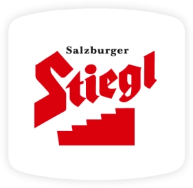
슈티글 양조장 Stiegl Brewery슈티글 양조장(Stiegl Brewery)은 1492년 오스트리아 잘츠부르크에서 설립된 양조 회사이다.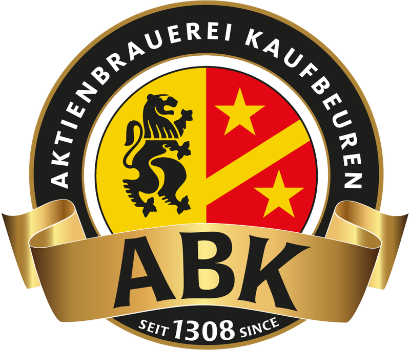
Aktienbrauerei KaufbeurenAktienbrauerei Kaufbeuren은 독일 카우프보이렌에 본사를 둔 양조장이다.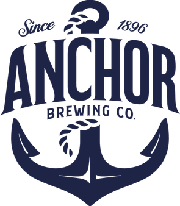
Anchor Brewing CompanyAnchor Brewing Company는 1896년 설립된 미국 샌프란시스코의 양조장이다.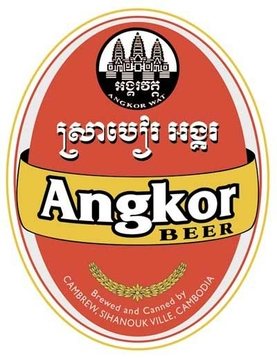
Angkor BeerAngkor Beer는 캄보디아의 라거 맥주이다.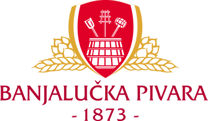
Banjalučka PivaraBanjalučka Pivara는 보스니아 헤르체고비나 바냐루카에 본사를 둔 양조회사이다.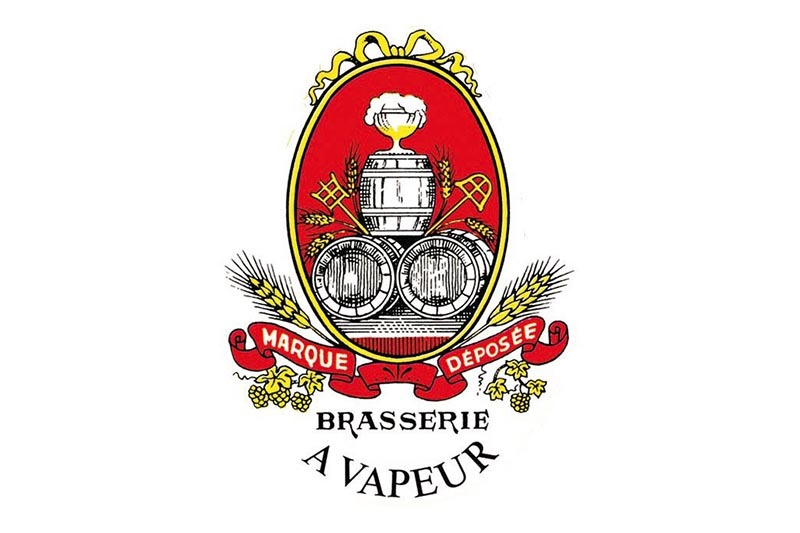
Brasserie à vapeurBrasserie à vapeur는 벨기에 Pipaix에 있는 양조장이다.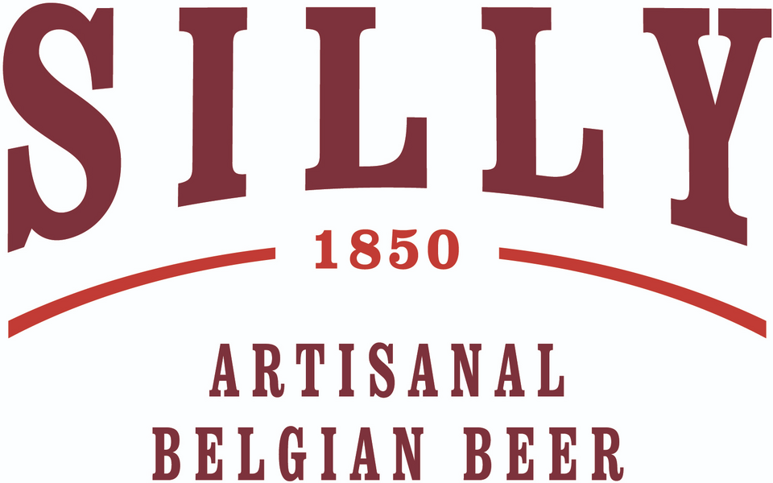
Brasserie de SillyBrasserie de Silly는 벨기에의 도시 Silly에 위치한 양조장이다.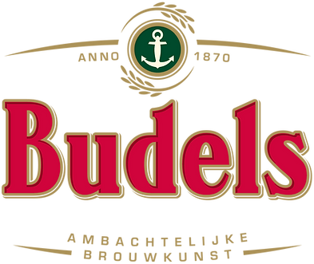
Budelse BrouwerijBudelse Brouwerij는 네덜란드 노르트브라반트주 Budel에 있는 양조장이다.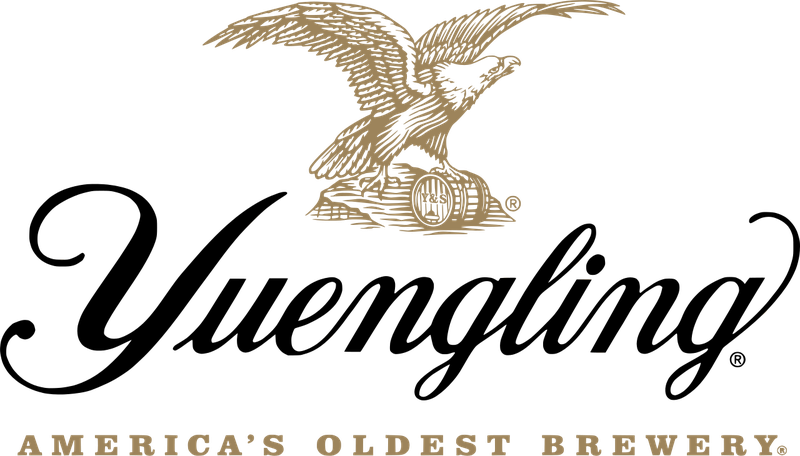
D.G. 잉링 & 손 YuenglingD.G. 잉링 & 손(Yuengling)은 1829년 미국 펜실베이니아주 포츠빌에서 창립한 맥주 회사이다.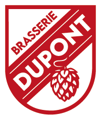
Dupont breweryDupont brewery는 벨기에 에노 서부 Tourpes(Leuze-en-Hainaut)에 있는 양조장이다.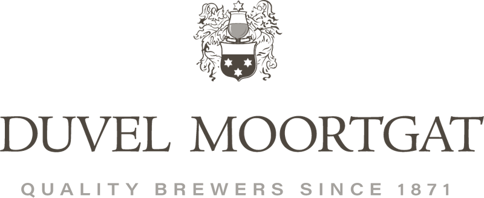
Duvel Moortgat BreweryDuvel Moortgat Brewery는 벨기에 안트베르펜주에서 1871년 설립된 양조장으로, 플랑드르 가족이 지배한다.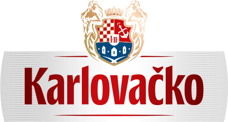
KarlovačkoKarlovačko는 크로아티아와 보스니아 헤르체고비나에서 인기가 있는 맥주 브랜드이다.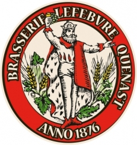
Lefebvre breweryLefebvre brewery는 벨기에 왈로니아의 Quenast에 있는 양조장이다.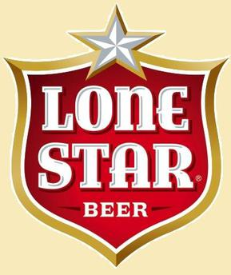
Lone Star Brewing CompanyLone Star Brewing Company는 1884년 미국 텍사스 샌안토니오에서 설립되어 Alamo Beer를 양조한 맥주 회사이다.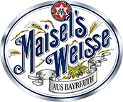
Maisel'sMaisel's는 1887년 설립되어 독일 바이로이트에 본사를 둔 가족 소유 양조장 Brauerei Gebr.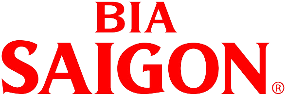
SabecoSabeco는 베트남 호찌민시에 본사를 둔 맥주 제조 기업으로, 정식 명칭은 Saigon Beer – Alcohol – Beverage Corporation이다.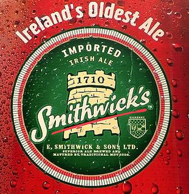
Smithwick'sSmithwick's는 1710년 킬케니에서 John Smithwick이 세운 양조장에서 출발한 아일랜드 레드 에일 스타일 맥주 브랜드이다.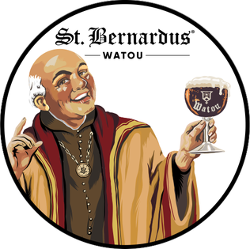
St. Bernardus BrewerySt. Bernardus Brewery는 벨기에의 Watou에 있는 양조장이다.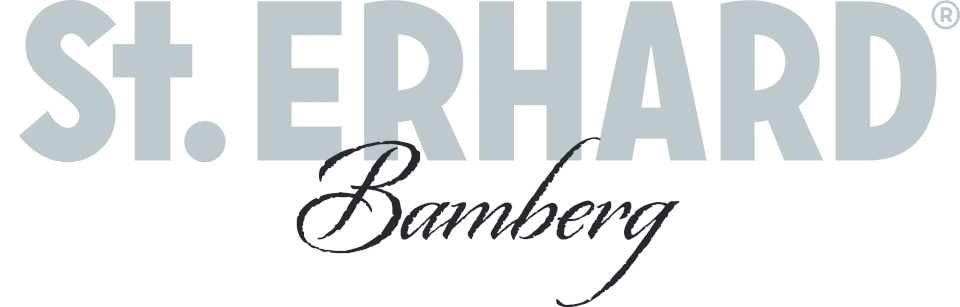
St. ErhardSt. Erhard는 독일 바이에른주 밤베르크 지역의 크래프트 양조장에서 만드는 맥주 브랜드이다.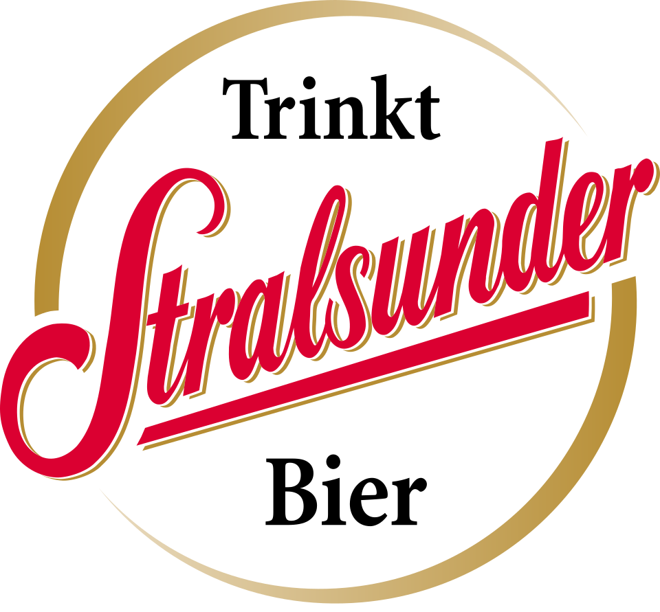
Störtebeker BraumanufakturStörtebeker Braumanufaktur는 독일 슈트랄준트에 본사를 둔 양조장이다.